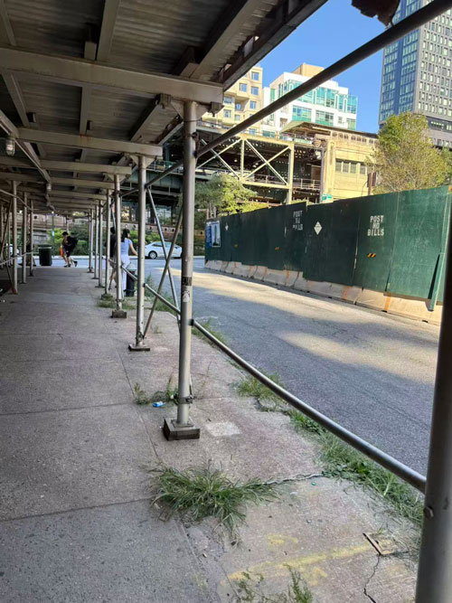
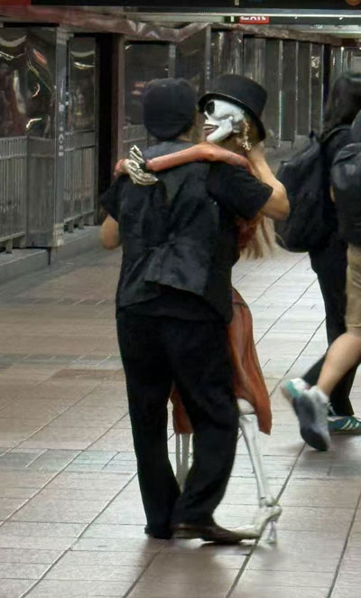
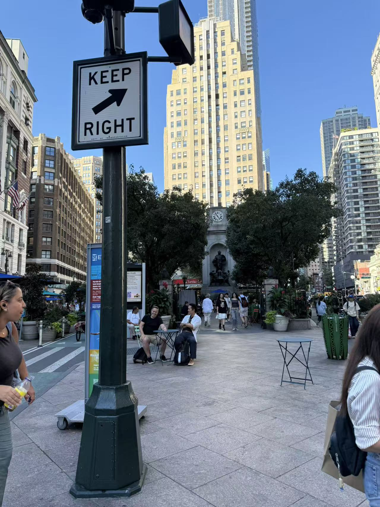
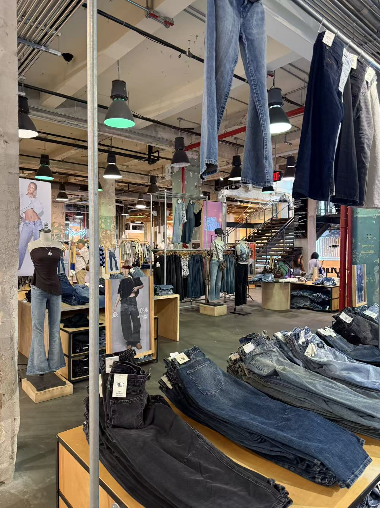
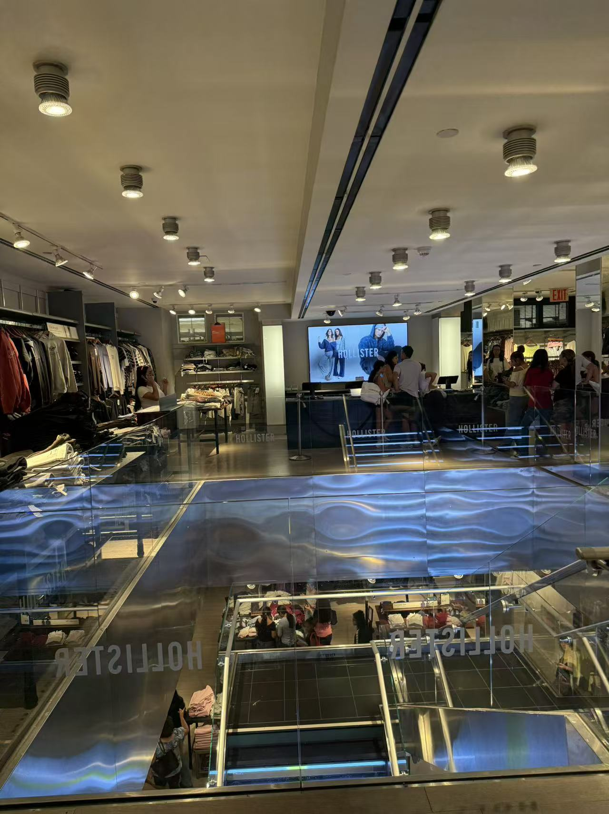
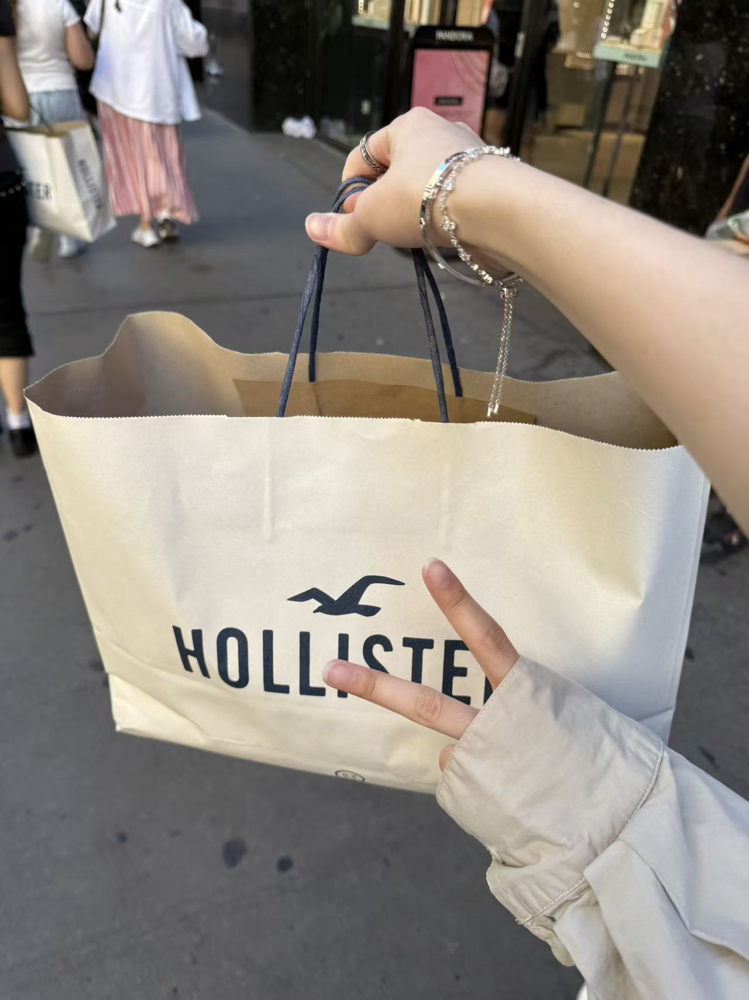
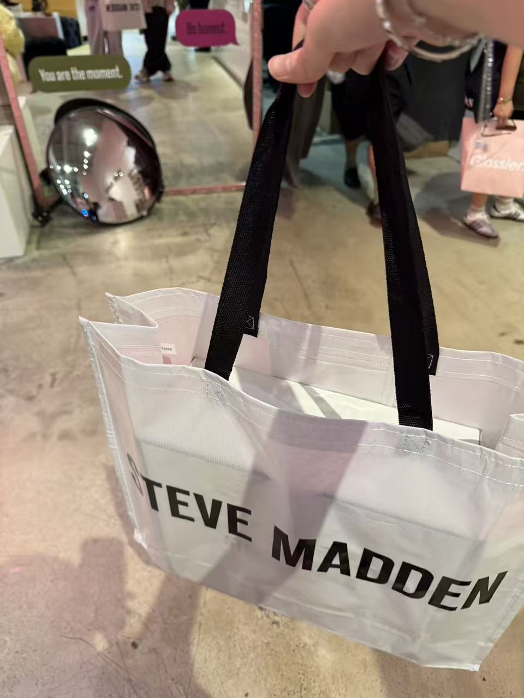
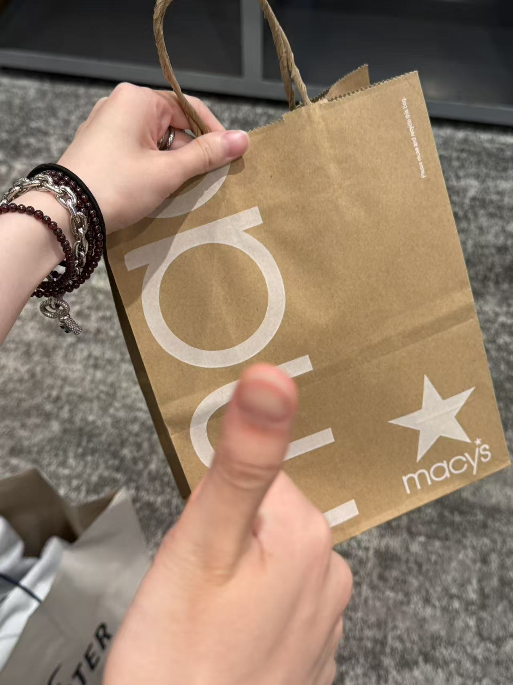
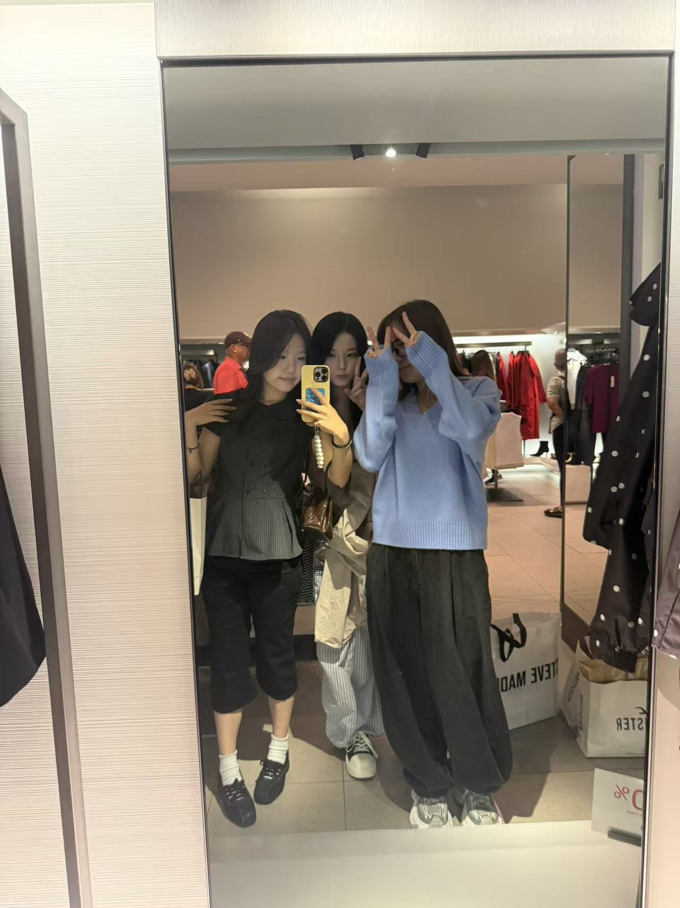

Finally, Macy's!

I finally arrived at Macy's and went inside.
Inside Macy's

I walked around the store and looked at what was on display.

Today is labor day
l need to walk 8 minutes to the subway station
Listen to the railway sounds from my trip.
Wow its really loud.

After the subway ride, I saw someone performing with a dancing skeleton!
It was really interesting and attracted a lot of people. I stopped to watch before continuing my trip.
After leaving the station, I arrived at the first destination.

Then I reached the second destination. It was time to choose where to go next.
I went to Urban Outfitters, then Hollister, and finally Macy's. You can follow my route or jump to a different stop below.

My first shopping stop was Urban Outfitters. I walked around and looked at the clothes.

After Urban Outfitters, I went to Hollister.
This is the music I recorded inside Hollister.

I finally arrived at Macy's and went inside.
I walked around the store and looked at what was on display.
I bought shoes!


These shopping bags were part of what I brought home from the trip.
After visiting the stores and buying shoes, it was time to head home.
From the railway sounds to the dancing skeleton and the different stores, there was a lot to remember.

Thanks for joining my trip!